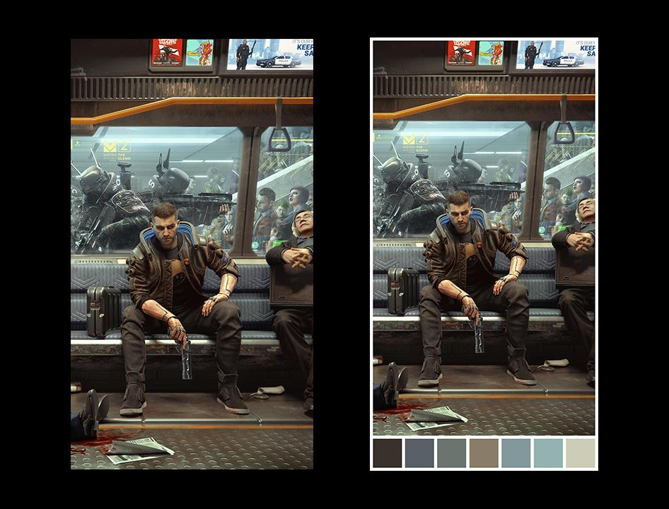

简单记录一下最近写的两个Python的脚本。一个是基于ColorThief 颜色分析及Python实现，对需要处理的图片生成带有调色盘的图片；另一个是对GMiner的日志文件进行提取并计算需要得到的信息。
1. 调色盘生成

调色盘生成的目的是对输入的图片（左图）进行颜色处理，生成带有调色盘的新图片（右图）。
基本思路为：利用ColorThief对图片的颜色进行提取并排序，再使用PIL生成指定大小的空白图片，将原图与提取的颜色粘贴到空白图片上，最后进行图片的储存。
中文注释需要在代码前添加一句：#coding:utf-8
1
2
3
4
5
6
7
8
9
10
11
12
13
14
15
16
17
18
19
20
21
22
23
24
25
26
27
28
29
30
31
32
33
34
35
36
37
38
39
40
41
42
43
44
45
46
47
48
49
50
51
52
53
54
55
56
57
58
59
60
61
62
63
64
65
66
67
68
69
70
71
|
from PIL import Image, ImageOps, ImageDraw
from colorthief import ColorThief
import os
class IMGProcessor:
PALETTE_NUM = 7
def __init__(self):
pass
def brightsort(self, color):
img_bright = 0.2126 * color[0] + 0.7125 * color[1] + 0.0722 * color[2]
return img_bright
def borderwidth(self, img_ow):
img_border = int(img_ow * 0.014)
return img_border
def process(self, ori_path):
if(not os.path.isabs(ori_path)):
abs_path = os.path.abspath(ori_path)
else:
abs_path = ori_path
try:
file_list = os.listdir(abs_path)
except:
print('路径错误!')
else:
print('路径读取成功...')
for img_index in file_list:
print('正在处理图片' + img_index + '中...')
img_path = os.path.join(abs_path, img_index)
img = Image.open(img_path)
img_name, img_format = os.path.splitext(img_index)
img_ow = img.size[0]
img_oh = img.size[1]
border_width = self.borderwidth(img_ow)
box_size = (img_ow - (self.PALETTE_NUM - 1) * border_width) / self.PALETTE_NUM
img_nw = int (img_ow + border_width * 2)
img_nh = int (img_oh + box_size + border_width * 3)
img_new = Image.new('RGB', (img_nw, img_nh), "white")
img_new.paste(img, (border_width, border_width))
color_thief = ColorThief(img_path)
palette = color_thief.get_palette(color_count = self.PALETTE_NUM, quality=1)
palette.sort(key = self.brightsort)
i = 0
for color in palette:
palette_box = Image.new('RGB', (int(box_size), int(box_size)), color)
img_new.paste(palette_box, (int(border_width + (i*box_size + i*border_width)), int(border_width + img_oh + border_width)))
i += 1
img_new.save(os.path.join(abs_path, img_name + '_palette' + img_format))
print("图片" + img_index + '处理完成')
|
2. 日志提取
日志提取的目的是对GMiner生成的日志文件进行特定内容的提取，计算出运行的总时长、耗电量以及电费。
首先更改日志的生成规则，使其按照日期时间生成日志的文件名。
1
| %date:~0,4%%date:~5,2%%date:~8,2%_%time:~0,2%%time:~3,2%%time:~6,2%_log.txt
|
这里如果按上面的方法生成日志在时间为0-9点的时候会有bug，因为如果TIME 是00点的时候，电脑显示的是0 不是00。因此要加一个判断条件：
1
2
3
| set h=%time:~0,2%
set h=%h: =0%
%date:~0,4%%date:~5,2%%date:~8,2%_%h%%time:~3,2%%time:~6,2%_log.txt
|
如上图所示，在日志文件中，需要提取的内容为Uptime后面的时间与Electricity后面的耗电量。通过搜索Uptime所在的行并进行文本分割，再将每个文本的最后一个有效值进行计算（同时过滤小于10kb的无效日志）。
1
2
3
4
5
6
7
8
9
10
11
12
13
14
15
16
17
18
19
20
21
22
23
24
25
26
27
28
29
30
31
32
33
34
35
36
37
38
39
40
41
42
43
44
| import os
filepathfolder = "F:/GMinerLog"
try:
file_list = os.listdir(filepathfolder)
except:
print('Wrong Path!')
else:
print('Path found, Caculating...')
totalday = 0
totalhour = 0
totalmin = 0
totalele = 0.000
limitsize = 10000
elefee = 0.7
for log_index in file_list:
filename = os.path.join(filepathfolder, log_index)
if os.stat(filename).st_size > limitsize:
lines = open(filename, "r",encoding="UTF-8",errors="ignore").readlines()
for line in lines:
if 'Uptime' in line:
result = line
temptime = result.split('Uptime: ')[1]
keytime = temptime.split(' Shares')[0]
day = keytime.split('d')[0]
time = keytime.split('d ')[1]
hour = time.split(':')[0]
minutes = time.split(':')[1]
totalday += int(day)
totalhour += int(hour)
totalmin += int(minutes)
tempele = result.split('Electricity: ')[1]
keyele = tempele.split('kWh')[0]
totalele += float(keyele)
if totalmin > 60:
totalhour += 1
totalmin -= 60
totalhour += totalday * 24
print("Total Time: %dhour %dmin." %(totalhour, totalmin))
print("Total Electricity: %.3fkWh." %(totalele))
print("Total Electricity Fee: %.3fRMB." %(totalele*elefee))
|